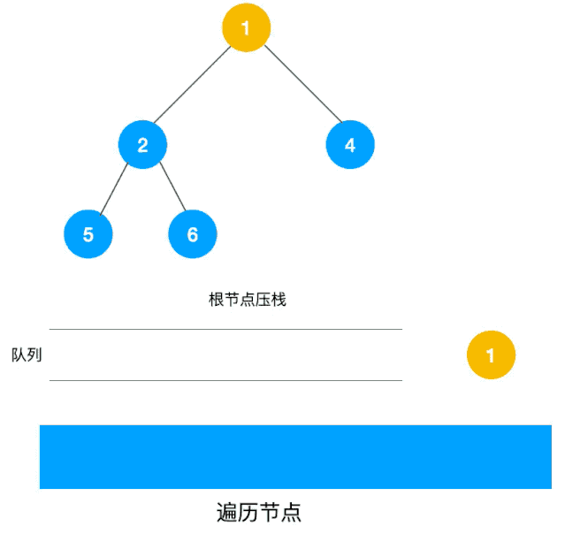

深度优先遍历和广度优先遍历
深度优先遍历(Depth First Search)
树是图的一种特例(连通无环的图就是树)。
在树中，深度优先遍历就像前序遍历，如下图（实际上也可以是中序遍历和后序遍历）
public class TreeNode
{
public int val;
public TreeNode left;
public TreeNode right;
public TreeNode(int val = 0, TreeNode left = null, TreeNode right = null)
{
this.val = val;
this.left = left;
this.right = right;
}
}
public class Solution
{
// 递归
public void DFS(TreeNode root)
{
if (root == null) return;
Console.Write(root.val + "");
DFS(root.left);
DFS(root.right);
}
// 迭代
public void DFS(TreeNode root)
{
if (root == null) return;
Stack<TreeNode> stack = new Stack<TreeNode>();
stack.Push(root);
while (stack.Count > 0)
{
TreeNode ndoe = stack.Pop();
Console.Write(node.val + "");
if (node.right != null)
{
stack.Push(node.right);
}
if (node.left != null)
{
stack.Push(node.left);
}
}
}
}
广度优先遍历(Breath First Search)
在树中，广度优先遍历就像层序遍历。用队列实现。

public class Solution { public void BFS(TreeNode root) { if (root == null) return; Queue<TreeNode> queue = new Queue<TreeNode>(); queue.Enqueue(root); while (queue.Count > 0) { TreeNode node = queue.Dequeue(); Console.Write(node.val + " "); if (node.left != null) { queue.Enqueue(root).left; } if (node.right != null) { queue.Enqueue(node.right); } } } }